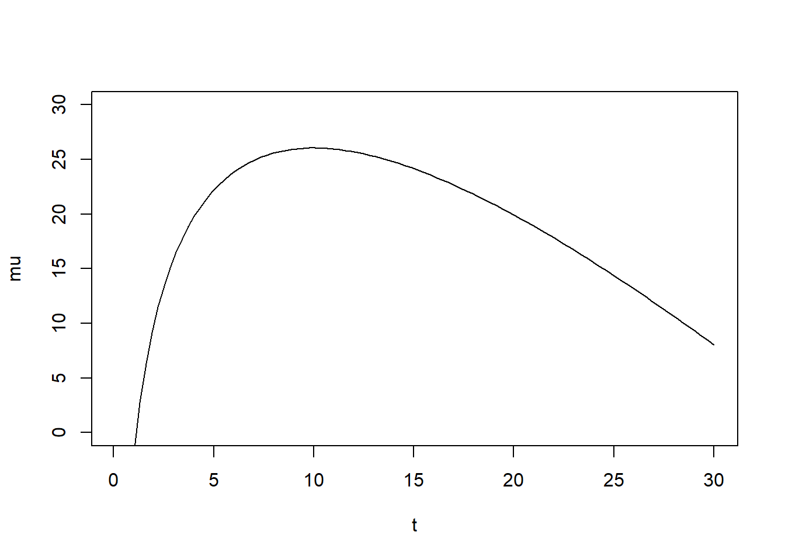
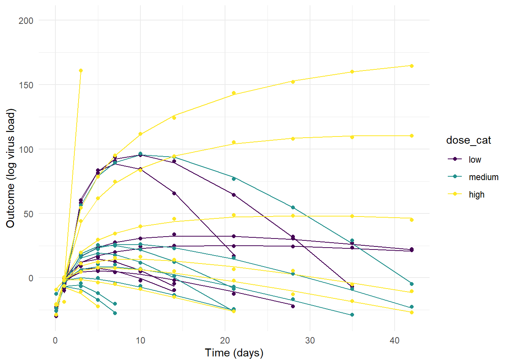
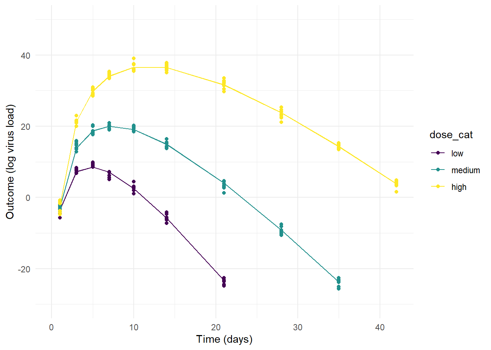
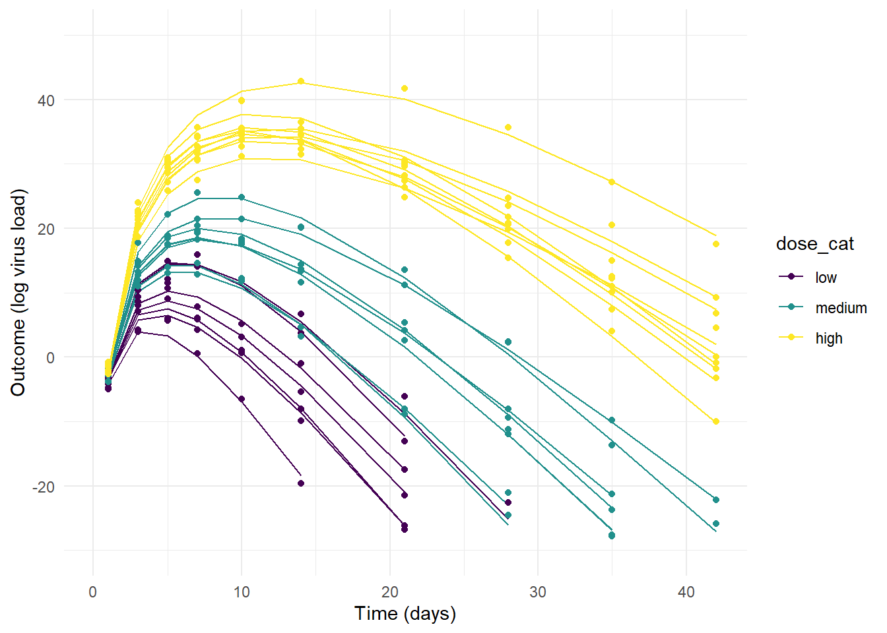

This is a tutorial and worked example, to illustrate how one can use the brms and rethinking R packages to perform a Bayesian analysis of longitudinal data in a multilevel/hierarchical/mixed-effects setup.
I wrote it mainly for my own benefit/learning (nothing forces learning a concept like trying to explain it.) Hopefully, others find it useful too.
It started out as a single post, then became too large and is now a multi-part series. It currently has the following parts:
- In part 1 (this post), I am introducing the setup and the models and use them to simulate data.
- In part 2, I fit the data to the models using the
rethinkingR package. - In part 3, I repeat the fitting, but now using the
brmsR package. - In part part 4, I show some some further explorations and alternatives of the models.
I generally place further resources and acknowledgments sections at the end. However, since this series seems to be expanding and there is no clear order, I decided to get it out of the way and place these items right here at the beginning, before starting with the tutorial sequence.
Further resources
Pretty much all I learned and described here comes from Richard McElreath’s excellent book Statistical Rethinking. His courses are also great. I watched all lectures of his 2022 course. McElreath does everything using the rethinking package, which he wrote. Solomon Kurz wrote an adaptation of the Statistical Rethinking book, which re-implements everything using brms. This great resource can be found here.
For some more materials specifically on longitudinal data analysis, see this online book by Solomon Kurz, as well as the underlying textbook that his adaption is based on.
A good resource by Michael Clark, which discusses how to fit mixed (hierarchical/multilevel) models with R in both a frequentist and Bayesian framework, can be found here.
Andrew Heiss also has a lot of good blog posts which cover fitting Bayesian models in R.
For more advanced materials, check out Michael Betancourt’s writings.
I mention some other resources throughout the text.
Acknowledgments
In addition to the resources I just listed, I want to mention my (at the time of this writing) PhD students Yang Ge and Zane Billings, who helped me work and think through this material and clear up some of my at times confused ideas. Jonathan French spotted a typo in my data generation code which led to initial model results that made no sense (now they make more sense) and provided additional useful feedback.
Disclaimer
I am starting to feel somewhat comfortable with that whole Bayesian/multilevel/partial pooling business. But I am still not sure I fully, truly understand every aspect. Or maybe I should say that I am sure I don’t fully understand 😄. It still seems a bit magical at times. Maybe it is just like quantum mechanics - once you’ve solved the Schroedinger equation often enough, you get a feeling of “understanding”, but I’m not sure full understanding happens - at least it never did for me. Maybe that’s as much as I can expect from Bayesian multilevel modeling too 😁.
Thus, it is quite possible the following posts contain thinking (or coding) mistakes. If you spot any, I’d appreciate feedback. And with that disclaimer out of the way, let’s get the tutorial started.
Introduction
I was trained as a Physicist, and I never formally learned statistics. My statistical mechanics courses were the most stats-type instruction I received. The joke in physics is that if you need statistics to analyze your data, you should have done a better experiment. And I was doing theoretical physics anyway, so no data was touched or harmed for my PhD thesis 😁.
That is all to say, the stats I know is self-taught. I started learning some stats during my postdoc, and once I started my faculty position in an Epidemiology & Biostatistics department, I picked up more.
I have always been drawn to the Bayesian perspective. It just seems to make most sense to me. However, frequentist material was (and still is) more ubiquitous and readily available. Thus, I picked up those approaches first and applied (and likely misapplied) them in various projects. But I’ve always been meaning to properly learn and use Bayesian approaches.
I finally had the combination of two PhD students with strong stats skills and interests, and exposure to Statistical Rethinking by Richard McElreath, which has put me on the - far from completed - path towards finally learning how to analyze data in a Bayesian framework.
Together with learning Bayesian methods, I’ve been learning the multilevel/hierarchical fitting approach, which is also new to me. This series of posts is a “thinking out loud” tutorial in which I walk through some of the stuff I learned so far.
The focus is on simulating and fitting longitudinal (panel, time-series) data in a multilevel framework using the rethinking and brms R packages.
There are of course other tutorials on this topic online. For instance Andrew Heiss has a nice one here (he has a lot of other good tutorials on his website). The problem for me is that he only uses brms and often doesn’t fully specify the model/priors. And that’s a step too advanced for me, I need to see every small baby step 😄.
So to teach myself how this all works and how to do it in R, I created some simulated data and code to fit it. For my own future reference, and maybe also for others, here is my write-up/tutorial.
Who this is (not) for
If you are completely new to Bayesian analyses, this might be too advanced. I’m trying to go slow, but I don’t explain everything. E.g., I assume you know some of the terminology and components of Bayesian models (e.g., prior, likelihood, posterior, chains.) I also assume you have a bit of familiarity with the general ideas of statistical model fitting (e.g., distributions, parameters). If you are new to all of this, I very strongly recommend the above mentioned Statistical Rethinking book. The book unfortunately only exists in a paid (and not cheap) version, but if you really want to learn this material, I think it’s worth the investment.
If you are an experienced Bayesian multilevel modeler, you’ll likely won’t learn anything here either. You can still keep reading and then (gently) let me know all the things I got wrong or could do better 😁 - I’m still learning that stuff myself and appreciate feedback!
The overall setup
The data that motivated this tutorial and that I have in mind here is virus load measured over time for individuals who were infected (challenged) with virus inoculum at different doses (3 for this specific case, but that doesn’t really matter). To make this specific, here is a preview of the kind of simulated data we’ll produce and explore, namely time-series of virus load measurements for a few individuals who received a virus challenge with three different virus doses (H = high (1000), M = medium (100), L = low (10)). Note that while I’m showing the dose in the plot as discrete categories, throughout this example we work with the actual, numerical value for the amounts of virus given (in our example, 10/100/1000 units). If you are curious to see an alternative modeling and analysis approach that treats the dose as unordered or ordered categories, see this separate post.
Your (and my future) data and questions will likely be different, but the overall setup is common and thus the ideas I describe here might still apply. Basically, if you have some quantity of interested that is measured over time (longitudinally) for \(N\) different individuals (or other discrete units, e.g. cities), and you want to determine if the time-series trajectory is systematically different between individuals based on some other characteristics (e.g. dose, treatment status, age, city size), then this approach described here can apply. Depending on your data and scientific questions, certain adaptations might be necessary.
Building the models
In the following, we consider several models that can be used to both simulate data, and then fit that simulated data.
For our notation, \(i\) indexes each individual and \(t\) indexes time (considered here to be in days, but this can be any time unit).
Model for outcome (the likelihood)
For our scenario, the outcome of interest (the log of the virus load) is continuous, which we assume to be normally distributed. Note that this is technically never fully correct, since there is some lower limit of detection for the virus load, which would lead to a truncation at low values. (A similar upper limit of detection does at times also occur.) If you have such censored data, you have to decide what to do about them. Here, we assume for simplicity that all values are far away from any limits, such that a normal distribution is a good approximation.
Making this normal distribution assumption, the equation describing the outcome (the likelihood model) is
\[ Y_{i,t} \sim \mathrm{Normal}\left(\mu_{i,t}, \sigma\right) \]
The \(Y_{i,t}\) are the measured outcomes (log virus load here) for each individual \(i\) at time \(t\). This is shown as symbols in the (simulated) data you can see in the figure above. The deterministic time-series trajectory for each individual is given by \(\mu_{i,t}\) (shown as lines in the figure above). \(\sigma\) captures variation in the data that is not accounted for by the deterministic trajectories.
Note that you could assume a different distribution, based on the specifics of your data. For instance, if you had a time-series of counts, you could use a Poisson distribution. Some of the details would then change, e.g., you wouldn’t have a mean and standard deviation in your model, but instead a rate. But the overall setup described here will still work the same way.
Model for deterministic trajectories
Next, we need to describe the underlying deterministic time-series model for the outcome.
There are different ways for choosing this part of the model. If you have enough information about your system to propose a mechanistic/process model, it is generally the best idea to go with such a model. Unfortunately, this is rare. Further, process models for time-series data are often implemented as differential equations, and those can take a very long time to fit.
A more common approach is to model the overall pattern in the data with some type of phenomenological/heuristic function, chosen to match the data reasonably well. Generalized linear models (GLM), such as linear or logistic models, fall into that category. Here, we use such a phenomenological function, but a GLM won’t describe the pattern in our data (rapid virus growth, followed by decline). Therefore, we use an equation that gets us the shape we are looking for. For our simple example here, I choose a function that grows polynomially and declines exponentially with time. To be clear, this function doesn’t try to represent any real processes or mechanisms, it is simply chosen as an easy way to capture the general pattern seen in the virus load time-series. This is very similar to the use of GLMs or other standard models, which often work well at describing the overall pattern, without assuming a mechanistic process leading to the relation between predictor and outcome assumed by the GLM.
The equation for our model is given by
\[ \mu_{i,t} = \log\left( t_i^{\alpha_i} e^{-\beta_i t_i} \right) \] In the model, \(t_i\) are the times for each individual \(i\) at which their outcome \(Y_{i,t}\) was measured. Those could be the same for each individual, which we’ll do here for simplicity, but they could also be all at different times and things won’t change. The model parameters are \(\alpha_i\) and \(\beta_i\), and their values describe the trajectory for each individual.
You can convince yourself with the following bit of code that this function, for the right values of \(\alpha\) and \(\beta\), gives you “up, then down” curves as a function of time. Note that since we are modeling the log of the virus load, I already log-transformed the equation.
t = seq(0.1,30,length=100) #simulating 30 days, don't start at 0 to avoid 0/inf in plot
alpha = 20; beta = 2; #just some values to show shape
mu = log(t^alpha*exp(-beta*t)) #log virus load
plot(t,mu, type = "l",ylim=c(0,30)) #looks somewhat like virus load in acute infections
The simple function I use here is in fact not that great for most real data, and better functions exist. See part 4 of this tutorial, where I show a more complex 4-parameter function, the one we actually used for our research problem. But to keep things somewhat simple here, I’m sticking with the 2-parameter function. It is fully sufficient to illustrate all the conceptual ideas I want to discuss. It can give us time-series which look somewhat similar to real virus load data often seen in acute infections. Of course, you need to pick whatever function describes your data reasonably well.
Numerical trickeries
Let’s go on a brief detour and discuss an important topic that comes up often.
In the equation for \(\mu_{i,t}\) I just introduced, only positive values of \(\alpha\) and \(\beta\) produce reasonable trajectories. It is common to have parameters that can only take on certain values (e.g., positive, between 0-1). The problem is that by default, most fitting routines assume that the parameters that need to be estimated can take on any value. It turns out that the fitting software we will use (Stan through rethinking and brms) can be told that some parameters are only positive. You’ll see that in action later. But with different software, that might not be possible. Further, as you’ll also see below, we don’t actually fit \(\alpha\) and \(\beta\) directly, and it is tricky to enforce them to be positive using the built-in parameter constraint functionality of Stan.
A general trick is to redefine parameters and rewrite the model to ensure positivity. Here, we can do that by exponentiating the parameters \(\alpha\) and \(\beta\) like this
\[ \mu_{i,t} = \log\left( t_i^{\exp(\alpha_{i})} e^{-\exp(\beta_{i}) t_i} \right) \] Now, \(\alpha_i\) and \(\beta_i\) themselves can take any value without the danger of getting a nonsensical shape for \(\mu_{i,t}\). It is likely possible to fit the model without taking those exponents and hoping that during the fitting process, the fitting routine “notices” that only positive values make sense. However, it might make the numerical procedures less robust.
Another alternative would be to enforce positive \(\alpha_i\) and \(\beta_i\) by setting up the rest of the model such that they can only take positive values. I’ll show a version for that in part 4.
One issue with that exponentiation approach is that it can sometimes produce very large or very small numbers and lead to numerical problems. For instance, if during the fitting the solver tries \(\beta_i = 10\) and time is 10, then the exponent in the second term becomes \(e^{-10 exp(10)}\), and that number is so small that R sets it to 0. Similarly, if the solver happens to explore \(\alpha_i = 10\) at time 10, we would end up with \(10^{exp(10)}\) in the first term, which R can’t handle and sets to Infinity. (Try by typing exp(-10 * exp(10)) or 10^exp(10) into the R console). In both cases, the result will not make sense and can lead to the numerical routine either completely failing and aborting with an error, or at a minimum wasting computational time by having to ignore those values. (Stan is good at usually not completely breaking and instead ignoring such nonsensical results, but one can waste a lot of computational time.)
Numerical issues like this one are not uncommon and something to always be aware of. To minimize such problems with very large/small numbers, one can often use algebraic (logarithm, exponent, etc.) rules and rewrite the equations. In our case, we can rewrite as
\[ \mu_{i,t} = \exp(\alpha_{i}) \log (t_{i}) -\exp(\beta_{i}) t_{i} \] Using \(\mu_{i,t}\) in this form in the code seems to work fine, as you’ll see. Note that this is exactly the same equation as the one above, just rewritten for numerical convenience. Nothing else has changed.
Modeling the main model parameters
Ok, now let’s get back to building the rest of our model. So far, we specified an equation for the virus load trajectory \(\mu_{i,t}\). We assume that every individual has their own virus-load trajectory, specified by parameters \(\alpha_i\) and \(\beta_i\). We need to define those. We allow each individual to have their own individual-level contribution to the parameters, and also assume there is a potential population-level effect of dose.
The latter assumption is in fact our main scientific question. We want to know if the dose someone receives has a systematic impact on the virus load trajectories. At the same time, we want to allow for variation between individuals. We could also consider a model that allows the impact of dose to be different for every individual. With enough data, that might seem feasible. But here, we assume we have limited data. (Of course, this is just simulated data, so it is as large as we want it to be. But for the real research project which motivates this tutorial, we only have data on 20 individuals.) We also really want to focus on the overall, population-level, effect of dose, and are less interested to see if there is variation of dose effect among individuals.
It is not clear how to best model the potential impact of inoculum dose. We really don’t have much biological/scientific intuition. Without such additional insight, a linear assumption is generally a reasonable choice. We thus model the main parameters \(\alpha_i\) and \(\beta_i\) as being linearly related to the (log of) the dose. This assumption relating the parameter to the log of the dose is mostly heuristic. But it does make some biological sense as often in systems like this, outcomes change in response to the logarithm of some input.
In addition to the dose component, every individual can have their unique contribution to \(\alpha_i\) and \(\beta_i\).
Writing this in equation form gives
\[ \begin{aligned} \alpha_{i} & = a_{0,i} + a_1 \log (D_i) \\ \beta_{i} & = b_{0,i} + b_1 \log (D_i) \end{aligned} \] Here, \(a_{0,i}\) and \(b_{0,i}\) are the individual-level contributions of each person to the main parameters, and \(a_1\) and \(b_1\) quantify how the dose each individual receives, \(D_i\), impacts the overall time-series trajectories. \(a_1\) and \(b_1\) do not vary between individuals, thus we are only estimating the overall/mean/population-level impact of dose, and won’t try to see if different individuals respond differently to dose. If, after fitting the data, we find that the distributions for \(a_1\) and \(b_1\) are mostly around zero, we could conclude that dose does not have an impact. In contrast, if the distributions for those parameters are away from zero, we conclude that dose seems to impact the time-series trajectories.
Note that if we were to fit this model in a frequentist framework, we would overfit (trying to estimate too many parameters). That is because if every individual has their own \(a_{0,i}\) and \(b_{0,i}\), the model can take any shape without needing the dose-related parameters to play a role. Thus we would have non-identifiability of parameters. As you’ll see in the next post of this series, this feature of potential overfitting/non-identifiability can also be seen in the Bayesian approach, but we are still able to obtain reasonable fits and parameter estimates. We’ll discuss that topic in more detail in the next post.
Some rescaling
Alright, time for another brief detour.
The model we have is ok. But as it is written right now, the parameters \(a_{i,0}\) and \(b_{i,0}\) describe the virus-load trajectory for an individual with a dose of 1 (log(1)=0). In our made-up example, individuals receive doses of strength 10/100/1000 but not 1. If we didn’t work with dose on a log scale, the \(a_{i,0}\) and \(b_{i,0}\) parameters would represent trajectories for individuals who received a dose of 0. That doesn’t make sense, since anyone not being challenged with virus will not have any virus trajectory.
It doesn’t mean the model is wrong, one can still fit it and get reasonable estimates. But interpretation of parameters, and thus choices for priors, might get trickier. In such cases, some transformation of the data/model can be useful.
A common approach is to adjust predictor variables by standardizing (subtracting the mean and dividing by the standard deviation). Here we do something slightly different. We subtract the log of the middle dose. We call that dose \(D_m\). In our example it takes on the value of 100. In general, you can do any transformation that you think makes the setup and problem easier to interpret.
The equations then become
\[ \begin{aligned} \alpha_{i} & = a_{0,i} + a_1 \left(\log (D_i) - \log (D_m)\right) \\ \beta_{i} & = b_{0,i} + b_1 \left(\log (D_i) - \log (D_m)\right) \end{aligned} \] Now the intercept parameters \(a_{i,0}\) and \(b_{i,0}\) describe the main model parameters \(\alpha_i\) and \(\beta_i\), and thus the trajectory for the virus, if the dose is at the intermediate level. Thus, these parameters are now easy to interpret.
Quick summary
At this stage in the model building process, our model as the following parts
\[ \begin{aligned} \textrm{Outcome} \\ Y_{i,t} \sim \mathrm{Normal}\left(\mu_{i,t}, \sigma\right) \\ \\ \textrm{Deterministic time-series trajectory} \\ \mu_{i,t} = \exp(\alpha_{i}) \log (t_{i}) -\exp(\beta_{i}) t_{i} \\ \\ \textrm{Deterministic models for main parameters} \\ \alpha_{i} = a_{0,i} + a_1 \left(\log (D_i) - \log (D_m)\right) \\ \beta_{i} = b_{0,i} + b_1 \left(\log (D_i) - \log (D_m)\right) \\ \end{aligned} \]
The model parameters are \(\sigma\), \(a_1\), \(b_1\), \(a_{i,0}\) and \(b_{i,0}\). The latter two consist of as many parameters as there are individuals in the data. So if we have \(N\) individuals, we have a total of \(3+2N\) parameters.
At this point, we could fit the model in either a Bayesian or frequentist framework. For either approach, we need to determine what (if any) additional structure we want to impose on the model parameters.
One approach is to not impose any further structure. We could make the assumption that every individual is completely different from each other, such that their outcomes do not inform each other. That would mean we allow values of \(a_{i,0}\) and \(b_{i,0}\) to be different for each individual, and let them be completely independent from each other. Such a model is (in McElreath’s terminology) a no pooling model. Such a model is expected to fit the data for each individual well. But it would lead to overfitting, trying to estimate too many parameters given the data. That means the estimates for the parameters will be uncertain, and thus our question of interest, the possible impact of dose, will be hard to answer. Also, it won’t be very good at predicting future individuals.
On the other extreme, we could instead assume that all individuals share the same parameter values, i.e. \(a_{i,0} = a_0\) and \(b_{i,0} = b_0\). This is called a full pooling model. You see this model often in data analyses, when investigators take the mean of some measurements and then just model the means. For our example, it we would be modeling the mean virus load time-series trajectory for all individuals in a given dose group. This type of model can extract the population level (in our case dose) effect, but by ignoring the variation among individuals for the same dose, the model is likely overly confident in its estimates, and it leads to underfitting of the data. By not allowing differences between individuals, the model is likely too restrictive and thus is not that great at capturing the patterns seen in the data. We’ll explore that when we fit the models.
An intermediate model - and usually the best approach - is one that neither allows the \(a_{i,0}\) and \(b_{i,0}\) to be completely independent or forces them to be exactly the same. Instead, it imposes some correlation between the parameters. This leads to the mixed/hierarchical/multilevel modeling approach. Such an approach can be implemented in both a frequentist or Bayesian framework. Here, we focus on the Bayesian approach, which I personally find more intuitive since everything is explicit and spelled out.
Specifying priors
Since we are working in a Bayesian framework, our parameters need priors. We assume that for all models we discuss below, the parameters \(a_{0,i}\), \(b_{0,i}\), \(a_1\) and \(b_1\) have priors described by Normal distributions. The standard deviation \(\sigma\) is modeled by a Half-Cauchy distribution (a Cauchy distribution that’s only defined for positive values, since standard deviations need to be positive). Those choices are a mix of convention, numerical usefulness and first principles. See for instance the Statistical Rethinking book for more details. You can likely choose other prior distributions and results might not change much. If they do, it means you don’t have a lot of data to inform your results and need to be careful about drawing conclusions.
The equations for our priors are
\[ \begin{aligned} \sigma \sim \mathrm{HalfCauchy}(0, 1) \\ a_1 \sim \mathrm{Normal}(0.1, 0.1) \\ b_1 \sim \mathrm{Normal}(-0.1, 0.1) \\ a_{0,i} \sim \mathrm{Normal}(\mu_a, \sigma_a) \\ b_{0,i} \sim \mathrm{Normal}(\mu_b, \sigma_a) \\ \end{aligned} \] I gave the prior distributions for \(\sigma\), \(a_1\) and \(b_1\) fixed values. I chose those values to get reasonable simulation results (as you’ll see below). We will use those same values for all models. The priors for \(a_{i,0}\) and \(b_{i,0}\) are more interesting. They depend on parameters themselves. In the next sections, we will explore different choices for those parameters \(\mu_a\), \(\mu_b\), \(\sigma_a\) and \(\sigma_b\), based on the different modeling approaches described in the previous section.
Model 1
Our first model is one that replicates the no pooling approach. In a Bayesian framework, such a no-pooling model can be implemented by making the priors for \(a_{i,0}\) and \(b_{i,0}\) very wide, which essentially assumes that any values are allowed, and there is (almost) no shared commonality/information among the parameters for each individual.
In our example, we can accomplish this by ensuring \(\sigma_a\) and \(\sigma_b\) are large, such that the normal distributions for \(a_{i,0}\) and \(b_{i,0}\) become very wide. In that case, the values for the mean, \(\mu_a\) and \(\mu_b\) don’t matter much since we allow the model to take on any values, even those far away from the mean. Therefore, we can just set \(\mu_a\) and \(\mu_b\) to some reasonable values, without paying too much attention.
This choice for the priors leads to a Bayesian model similar to a frequentist no-pooling model.
Model 2
Now we’ll try to reproduce the full pooling model in a Bayesian framework. We could remove the individual-level variation by setting \(a_{i,0} = a_0\) and \(b_{i,0} = b_0\) (and we’ll do that below). But if we want to keep the structure we have above, what we need to do is to ensure the priors for those parameters are very narrow, such that every individual is forced to have more or less the same value. We can accomplish that by setting values for \(\sigma_a\) and \(\sigma_b\) very close to zero.
If we set the \(\mu_a\) and \(\mu_b\) parameters to some fixed values, we would enforce \(a_{i,0}\) and \(b_{i,0}\) to take specific values too. We don’t want that, we want them to be estimated, we just want to make sure all individuals get pretty much the same estimate. To do so, we can give \(\mu_a\) and \(\mu_b\) their own distributions and make those wide/flat. A normal distribution for each parameter with a wide variance should work.
With these choices, we have a model that can find the mean for \(a_{i,0}\) and \(b_{i,0}\), but the spread in those parameters is minimal.
Model 3
Ok, so we discussed that the no pooling model 1 is too flexible and thus likely overfits, the full pooling model 2 is too rigid and likely underfits. Why not build a model that has reasonable priors in between those two? That’s a good idea and it leads us to a partial pooling model.
We want priors for \(a_{i,0}\) and \(b_{i,0}\) that are not too flat/wide (model 1) or too narrow (model 2). They should allow some variation, but still ensure that there is shared information among the parameters. With that, we might be able to find a happy medium between underfitting and overfitting. Such priors are known as regularizing priors. They allow some variability for the parameters among individuals, while implementing the notion that the individuals share some commonality, and therefore their parameters should also share some common features, as indicated by belonging to the same prior distributions.
The question is, how to set the priors? One option is to pick some values for \(\mu_a\), \(\mu_b\), \(\sigma_a\) and \(\sigma_b\) (either by specifying their distributions or by directly setting values), then do prior predictive simulations, see if results look reasonable (no crazy outcomes, but still a good bit of variability) and then iterate until one found good priors. One can also explore the impact of the priors on the posterior. If they have a strong impact, it suggests there is not enough data to fully determine the posterior.
This approach of trial and error is reasonable, and we’ll use it here for our model 3. But it also feels a bit like ad-hoc. One might want to ask the question if there is another way to pick the priors. The answer is yes, which brings us to our next model.
Model 4
Instead of trying to pick values for the priors manually (again, nothing wrong with that, but maybe not always optimal), one can let the data determine the priors. That approach involves estimating each of the parameters that specify the priors for \(a_{i,0}\) and \(b_{i,0}\).
The parameters \(\mu_a\), \(\mu_b\), \(\sigma_a\) and \(\sigma_b\) now get their own distributions, with their own priors (often called hyper-priors). The values for the hyper-priors are picked such that resulting simulations from the model produce (somewhat) reasonable trajectories, as you’ll see below. In principle, one can further specify them as functions of other priors (turtles, I mean priors, all the way down!). But in most cases, including our example, not much is gained from that.
What now happens is that as we fit the model, our priors for \(a_{i,0}\) and \(b_{i,0}\) share some information, and the amount of sharing is controlled by the hyper-prior parameters, which are determined by the data fitting process itself. It sounds a bit like magic, and I admit that on some deep level, I still don’t fully understand this magic, even though I can follow the steps. Maybe at some point in the future I will fully get it. For now I’m content with the level of understanding I have, and knowing that it works 😄.
This model is a partial pooling model like model 3, but now the pooling is determined adaptively by the data. This leads to a happy intermediate between the too-rigid full-pooling model and the too-flexible no-pooling model. This kind of model is often the best choice.
Recap
Ok, those were a lot of steps, so to have it all in one place, here are the models again, now shown with equations and with all components in one place.
All models have these parts:
\[ \begin{aligned} \textrm{Outcome} \\ Y_{i,t} \sim \mathrm{Normal}\left(\mu_{i,t}, \sigma\right) \\ \\ \textrm{Deterministic time-series trajectory} \\ \mu_{i,t} = \exp(\alpha_{i}) \log (t_{i}) -\exp(\beta_{i}) t_{i} \\ \\ \textrm{Deterministic models for main parameters} \\ \alpha_{i} = a_{0,i} + a_1 \left(\log (D_i) - \log (D_m)\right) \\ \beta_{i} = b_{0,i} + b_1 \left(\log (D_i) - \log (D_m)\right) \\ \\ \textrm{population-level priors} \\ \sigma \sim \mathrm{HalfCauchy}(0,1) \\ a_1 \sim \mathrm{Normal}(0.1, 0.1) \\ b_1 \sim \mathrm{Normal}(-0.1, 0.1) \\ a_{0,i} \sim \mathrm{Normal}(\mu_a, \sigma_a) \\ b_{0,i} \sim \mathrm{Normal}(\mu_b, \sigma_a) \\ \end{aligned} \]
For model 1, we set the parameters describing the distribution for \(a_{0,i}\) and \(b_{0,i}\) to produce un-informative/flat priors. For our example, these values work:
\[ \begin{aligned} \mu_a & = 3 \\ \mu_b & = 1 \\ \sigma_a & = 10 \\ \sigma_b & = 10 \end{aligned} \]
For model 2, we set the standard deviations to a very small value and give the mean parameters somewhat flexible distributions. These work:
\[ \begin{aligned} \mu_a & \sim \mathrm{Normal}(3, 1) \\ \mu_b & \sim \mathrm{Normal}(1, 1) \\ \sigma_a & = 0.001 \\ \sigma_b & = 0.001 \end{aligned} \]
As mentioned, an alternative for model 2, which I’ll call model 2a, is to reduce the parameters from 2N to 2 and specify these priors for what are now population-level only parameters, like this:
\[ \begin{aligned} a_{0} & \sim \mathrm{Normal}(3, 1) \\ b_{0} & \sim \mathrm{Normal}(1, 1) \end{aligned} \]
For model 3, we set values that lead to priors that are reasonably intermediate between the model 1 too flat and model 2 too narrow priors. These work:
\[ \begin{aligned} \mu_a & = 3 \\ \mu_b & = 1 \\ \sigma_a & = 1 \\ \sigma_b & = 1 \end{aligned} \]
Finally, model 4 has distributions for all 4 parameters. These work for our example
\[ \begin{aligned} \mu_a & \sim \mathrm{Normal}(3, 1) \\ \mu_b & \sim \mathrm{Normal}(1, 1) \\ \sigma_a & \sim \mathrm{HalfCauchy}(0,1) \\ \sigma_b & \sim \mathrm{HalfCauchy}(0,1) \end{aligned} \]
Simulating data
So far, we’ve specified some mathematical/statistical models. It’s now time to implement them in R. We’ll use these models both for fitting data (in the next parts of this tutorial) and for simulating data, which we are doing now. This involves translating the models into R code, then running them to simulate data. I’ll show the code with explanations and commentary in the following sections.
Note that we can use any of the models to both generate simulated data, and to fit the simulated data. The model used for data generation and fitting it do not need to be the same. We’ll look at that more as we go along. The following code produces simulated data for (some of) the models.
It’s often useful to go slow and type your own code, or copy and paste the code chunks below and execute one at a time. However, if you are in a hurry, you can find the code shown below in this file.
General settings
## General settings
set.seed(123) #for reproducibility
# days at which we assume outcome is measured
timevec <- c(0.1,1,3,5,7,10,14,21,28,35,42)
#different number of individuals per dose to make it clearer which is which
#also, that's the structure of the data which motivated the tutorial
Nlow = 7; Nmed = 8; Nhigh = 9; filename = "simdat.Rds"
#if you want to explore how model fitting changes if you increase sample size
#turn on this line of code
#this is used in part 4 of the tutorial
#Nlow = 70; Nmed = 80; Nhigh = 90; filename = "simdat_big.Rds"
Ntot = Nlow + Nmed + Nhigh; #total number of individuals
# Set values for dose
# since we only consider dose on a log scale
# we'll log transform right here and then always use it in those log units
high_dose = log(1000)
med_dose = log(100)
low_dose = log(10)
dosevec = c(rep(low_dose,Nlow),rep(med_dose,Nmed),rep(high_dose,Nhigh))
# we are also creating a version of the dose variable
# that consists of ordered categories instead of numeric values
# we'll use that mostly for plotting
dosevec_cat = ordered(c(rep("low", Nlow),
rep("medium",Nmed),
rep("high",Nhigh)),
levels=c("low","medium","high"))
## Setting parameter valuesI chose fairly low sample sizes, with less than 10 individuals for each dose group. This is motivated by the real data I have in mind, which has similar sample sizes. Of course, more data is generally better. In part 4 of the tutorial I play around a bit with fitting larger samples.
Setting parameter values
The parameters \(\sigma\), \(a_1\) and \(b_1\) show up in all models. For easy comparison between models, I’m setting them to the same value for all models.
For the estimation procedure (see part 2), we assume that those parameters follow the distributions shown above. We could sample a single value for each of them from such a distribution. But to reduce variability and to more easily compare estimated parameters to those used to simulate the data, I’m setting them to specific values, which you can conceptually think of as being a single sample from the distributions we discussed above. It makes sense to chose their means as the value to use.
sigma = 1
a1 = 0.1
b1 = -0.1Now well get values for the other parameters. For model 1, we have \(N\) parameters for \(a_{i,0}\) and \(b_{i,0}\), with priors that are very wide. We set them as follows
m1_mua = 3
m1_mub = 1
m1_sigmaa = 1
m1_sigmab = 1
m1_a0 = rnorm(n=Ntot, m1_mua, m1_sigmaa)
m1_b0 = rnorm(n=Ntot, m1_mub, m1_sigmaa)
# saving main parameters
m1pars = c(sigma = sigma, a1 = a1, b1 = b1,
a0_mu = m1_mua, b0_mu = m1_mub)Note a few things here. First, the priors are narrower than I specified above. As you will see in the figures below, even with these less wide priors, results for model 1 still look way too variable. We can use the wider priors when we fit the model, to allow the data to dominate the fits. But for data generation, going too wild/wide seems pointless.
Second, you noticed that I did sample from distributions for the \(a_{i,0}\) and \(b_{i,0}\) parameters. That’s not necessary, I could have also specified values for each of the parameters, like I did for \(\sigma\), \(a_1\) and \(b_1\), as long as the values can be thought of as coming from the underlying distribution. If I sample, I need to make sure to set a random seed (which I did above) to ensure reproducibility.
Lastly, I’m saving the parameters in a vector which will be added to the generated data so we can keep track of the parameters that were used to generate the data, and compare later with the estimates from the models.
Ok, now for model 2. We have 2 versions, model 2a collapses the individual-level parameters into a single population one. We’ll explore that model when doing the fitting, for simulating the data I’m just going with model 2.
m2_mua = 3
m2_mub = 1
m2_sigmaa = 0.0001
m2_sigmab = 0.0001
m2_a0 = rnorm(n=Ntot, m2_mua, m2_sigmaa)
m2_b0 = rnorm(n=Ntot, m2_mub, m2_sigmab)
m2pars = c(sigma = sigma, a1 = a1, b1 = b1,
a0_mu = m2_mua, b0_mu = m2_mub)Finally, model 3 with priors that have a width between those of model 1 and model 2.
m3_mua = 3
m3_mub = 1
m3_sigmaa = 0.1
m3_sigmab = 0.1
m3_a0 = rnorm(n=Ntot, m3_mua, m3_sigmaa)
m3_b0 = rnorm(n=Ntot, m3_mub, m3_sigmaa)
m3pars = c(sigma = sigma, a1 = a1, b1 = b1,
a0_mu = m3_mua, b0_mu = m3_mub)Note that for the purpose of simulating data, model 4 is basically the same as model 3. We would need to sample (or pick) values for the parameters \(\mu_a\), \(\sigma_a\), \(\mu_b\), and \(\sigma_b\) and then use them to sample (or set) values for \(a_{i,0}\) and \(b_{i,0}\). This setup makes sense during fitting, but for generating data, it isn’t really different than what er already did. You can conceptually assume we did sample parameters and happen to get the values shown for model 3. Thus, model 4 collapses to the models we already specified.
Overall, when generating data, we can go through all steps of sampling from each specified distribution to get values. Nothing wrong with that. But if we change the random seed, values change. And it is harder to compare the parameters used to generate the data with those that are estimated. Thus, it is generally easier during the data generation process to assume conceptually that values correspond to samples from distributions, but then set the values manually. Above, we used that approach for most parameters. We did sample the \(a_{0,i}\) and \(b_{0,i}\) to show explicitly the sampling steps involved in generating simulated data from our Bayesian models.
Creating simulated data
Now we can combine the parameters as specified in the equations above to get simulated trajectories for each individual, for each of the models. We just need to add the parameters together in the way prescribed by the model to get to the outcome. This is a nice feature of Bayesian models, that you can run them both “forward” to generate data given parameter values, and “backward” to estimate parameter values, given the data. Because of that feature, Bayesian models are generative models.
Here is the code that computes the mean and the outcome for model 1, the wide model.
m1_alpha = m1_a0 + a1*(dosevec - med_dose)
m1_beta = m1_b0 + b1*(dosevec - med_dose)
#doing matrix multiplication to get time-series for each individual
#for that to work, the timevec vector needs to be transposed
m1_mu = exp(m1_alpha) %*% t(log(timevec)) - exp(m1_beta) %*% t(timevec)
# apply variation following a normal distribution to each data point
m1_y = rnorm(length(m1_mu),m1_mu, sigma)
# in a final step, we reorganize the data into a long data frame with
# columns id, time, dose, model,
# the deterministic mean mu, and the normally distributed outcome.
# We store dose in 3 versions, the original (log transformed one),
# the one that has the middle value subtracted, and a categorical one.
# Note that trick using sort to get time in the right order.
# Not a robust way of doing things, but works here
m1_dat <- data.frame(id = rep(1:Ntot,length(timevec)),
dose = rep(dosevec,length(timevec)),
dose_adj = rep(dosevec,length(timevec))-med_dose,
dose_cat = rep(dosevec_cat,length(timevec)),
time = sort(rep(timevec,Ntot)),
mu = as.vector(m1_mu),
outcome = as.vector(m1_y),
model = "m1")Now we just repeat the same code again for the other models.
#model 2
m2_alpha = m2_a0 + a1*(dosevec - med_dose)
m2_beta = m2_b0 + b1*(dosevec - med_dose)
m2_mu = exp(m2_alpha) %*% t(log(timevec)) - exp(m2_beta) %*% t(timevec)
m2_y = rnorm(length(m2_mu),m2_mu, sigma)
m2_dat <- data.frame(id = rep(1:Ntot,length(timevec)),
dose = rep(dosevec,length(timevec)),
dose_adj = rep(dosevec,length(timevec))-med_dose,
dose_cat = rep(dosevec_cat,length(timevec)),
time = sort(rep(timevec,Ntot)),
mu = as.vector(m2_mu),
outcome = as.vector(m2_y),
model = "m2")
#model 3
m3_alpha = m3_a0 + a1*(dosevec - med_dose)
m3_beta = m3_b0 + b1*(dosevec - med_dose)
m3_mu = exp(m3_alpha) %*% t(log(timevec)) - exp(m3_beta) %*% t(timevec)
m3_y = rnorm(length(m3_mu),m3_mu, sigma)
m3_dat <- data.frame(id = rep(1:Ntot,length(timevec)),
dose = rep(dosevec,length(timevec)),
dose_adj = rep(dosevec,length(timevec))-med_dose,
dose_cat = rep(dosevec_cat,length(timevec)),
time = sort(rep(timevec,Ntot)),
mu = as.vector(m3_mu),
outcome = as.vector(m3_y),
model = "m3")Plotting the simulated data
To ensure our simulated data makes sense, let’s plot what we produced. We’ll use ggplot2, so let’s load it first.
library('ggplot2')These lines of code create plots for each model/simulated dataset.
p1 <- ggplot(m1_dat) +
geom_line(aes(x=time, y=mu, col = dose_cat, group = id)) +
geom_point(aes(x=time, y=outcome, col = dose_cat)) +
scale_y_continuous(limits = c(-30,200)) +
labs(y = "Outcome (log virus load)", x = "Time (days)") +
theme_minimal()
p2 <- ggplot(m2_dat) +
geom_line(aes(x=time, y=mu, col = dose_cat, group = id)) +
geom_point(aes(x=time, y=outcome, col = dose_cat)) +
scale_y_continuous(limits = c(-30,50)) +
labs(y = "Outcome (log virus load)", x = "Time (days)") +
theme_minimal()
p3 <- ggplot(m3_dat) +
geom_line(aes(x=time, y=mu, col = dose_cat, group = id)) +
geom_point(aes(x=time, y=outcome, col = dose_cat)) +
scale_y_continuous(limits = c(-30,50)) +
labs(y = "Outcome (log virus load)", x = "Time (days)") +
theme_minimal()Now, let’s plot the simulated data. For each plot, the lines show the deterministic mean trajectory, and the symbols show the outcomes, which have some extra variation on top, determined by the value of \(\sigma\).
plot(p1)
plot(p2)
plot(p3)
As you can see, the priors for model 1 are so wide that some of the resulting trajectories are not reasonable. The variation between individuals is so strong that the dose effect - which we programmed into the simulated data to exist - is swamped out. That could certainly be true for real data, sometimes there is just too much noise/variability to detect a pattern, even if it exists. But some of the trajectories produce virus load that’s just biologically unreasonable (note how high the y-values go.)
On the other extreme, the priors for model 2 allow so little variation that the individual-level variation is minimal and the only effect that is noticable is the dose dependence we assumed in our model (by setting \(a_1\) and \(b_1\) to non-zero values).
Model 3 produces the most reasonable trajectories, with both the dose-effect showing, and some variation between individuals.
Saving the simulated data
Finally, let’s combine all the simulated data into a single list containing all data frames, and save it. I’m also saving the parameters for each model, and sample sizes, so we can quickly retrieve them when we compare with the model estimates.
We’ll also save one of the plots (this is mainly so I can show it at the beginning of the tutorial).
#save a plot so we can use it in the blog post
simdat <- list(m1 = m1_dat, m2 = m2_dat, m3 = m3_dat, m1pars = m1pars, m2pars = m2pars, m3pars = m3pars, Nlow = Nlow, Nmed = Nmed, Nhigh = Nhigh)
saveRDS(simdat, file = filename)
ggsave(file = paste0("featured.png"), p3, dpi = 300, units = "in", width = 6, height = 6)Warning: Removed 53 row(s) containing missing values (geom_path).Warning: Removed 53 rows containing missing values (geom_point).We’ll load and use the simdat file in the next parts of the tutorial.
Summary and continuation
To sum it up, we specified several models that could be used to both fit and generate simulated time-series data for individuals that might differ by some additional factor (here, dose). We wrote some code that simulated data, which we then plotted to make sure it looks reasonable.
Of course, the main part of fitting the data is still missing. I had planned to do the whole process in a single tutorial. But it’s gotten so long that I decided to split the model definition and data simulation from the fitting. So as a next step, hop on over to part 2 where we now fit these models and simulated data.
Citation
BibTeX citation:
@online{handel2022,
author = {Andreas Handel},
editor = {},
title = {Bayesian Analysis of Longitudinal Multilevel Data Using Brms
and Rethinking - Part 1},
date = {2022-02-22},
url = {https://www.andreashandel.com/posts/2022-02-22-longitudinal-multilevel-bayes-1},
langid = {en}
}
For attribution, please cite this work as:
Andreas Handel. 2022. “Bayesian Analysis of Longitudinal
Multilevel Data Using Brms and Rethinking - Part 1.” February 22,
2022. https://www.andreashandel.com/posts/2022-02-22-longitudinal-multilevel-bayes-1.
Comment on terminology
I have been talking about 4 different models (or 5 if you count model 2a). As I’m sure you realized, some models are structurally the same, just with different choices for the priors. In a Bayesian framework, the priors (which includes choices for both the distribution and values) are part of the model, thus in that sense, model 1 and 3 can be considered different models, even if we only change the values for the variance priors. For the purpose of this tutorial I’ll take that perspective and consider them separate models. It also makes it easier to talk about them by giving each their own label/number.